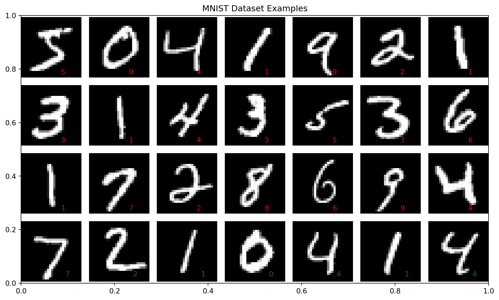
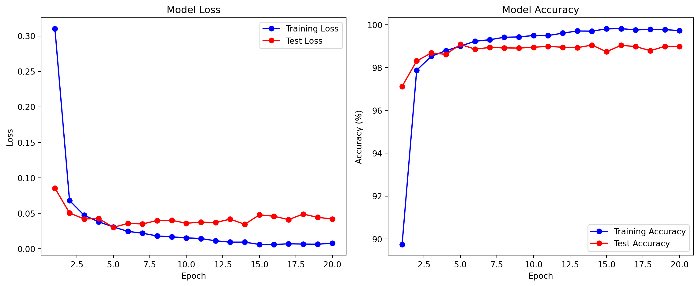
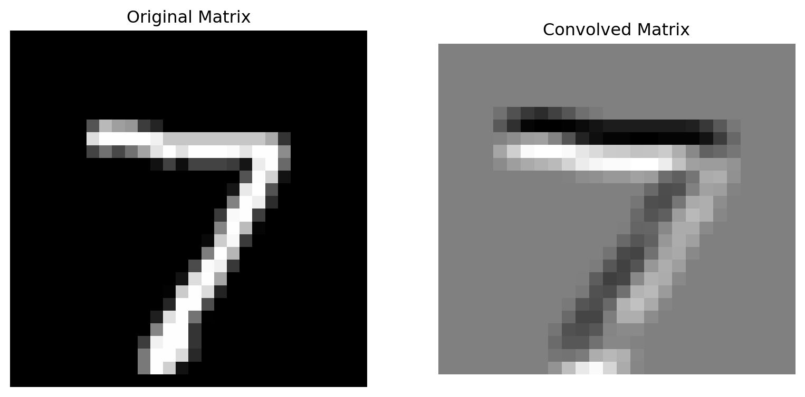
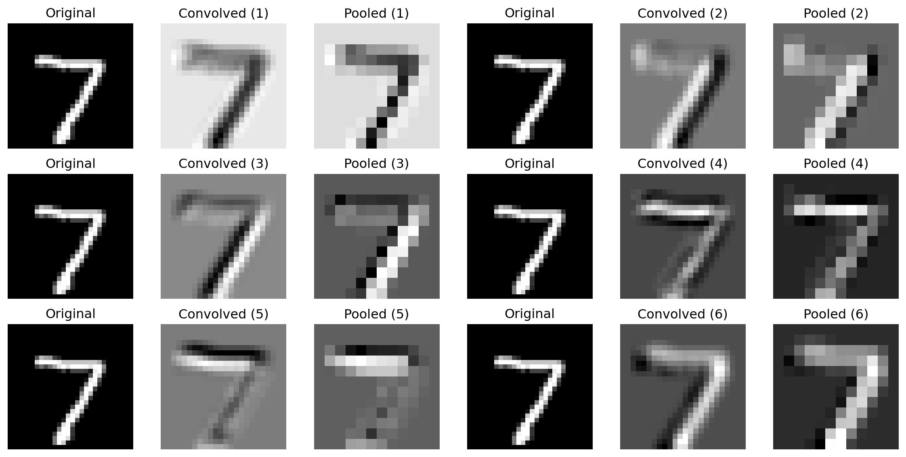

flowchart LR
%% 输入层
subgraph 输入层
A1
A2
A3
A4
A5
end
%% 隐藏层 1
subgraph 隐藏层 1
H11
H12
end
%% 隐藏层 2
subgraph 隐藏层 2
H21
H22
end
%% 输出层
subgraph 输出层
O1((y))
end
%% 连接 输入层 → 隐藏层 1
A1 --> H11
A1 --> H12
A2 --> H11
A2 --> H12
A3 --> H11
A3 --> H12
A4 --> H11
A4 --> H12
A5 --> H11
A5 --> H12
%% 连接 隐藏层 1 → 隐藏层 2
H11 --> H21
H11 --> H22
H12 --> H21
H12 --> H22
%% 连接 隐藏层 2 → 输出层
H21 --> O1
H22 --> O1
23 手搓神经网络模型
23.1 先决条件
在开始之前，请确保您具备以下知识和环境配置：
- Python 编程基础：熟悉基本的 Python 语法和常用库
- 环境配置：
- Python 3.10 或更高版本
- Conda 包管理工具
- PyTorch 2.0 或更高版本
- GPU 支持（可选，但推荐）
如果您还没有准备好这些环境，请先按照 [./setup-a-reproducible-envionment.qmd] 部分的说明进行设置。
23.2 概述
本项目将展示如何利用 PyTorch 从零开始构建一个神经网络模型，以解决手写字母（实际上这里使用的是 MNIST 手写数字）识别问题。本文内容不仅介绍了神经网络的基础知识、训练本质和卷积操作的优势，还给出了完整代码实现，让你能够亲自动手构建并训练模型。
23.3 神经网络模型基础
在开始代码实现之前，我们先介绍一些神经网络的基本概念和原理。
23.3.1 什么是神经网络？
神经网络是一种受人脑神经元连接方式启发而构造的数学模型。它由大量节点（神经元）构成，这些节点以不同的层级进行排列：
- 输入层：接收外界数据。
- 隐藏层：对数据进行特征提取与变换。
- 输出层：给出最终的预测结果。
下面的 Mermaid 图展示了一个简单神经网络的基本结构Figure 23.1：
23.3.2 神经网络训练的本质
神经网络的训练主要分为以下几个步骤：
- 前向传播：将输入数据通过网络，得到预测输出。
- 计算损失：比较预测输出和真实标签之间的误差。
- 反向传播：根据损失计算梯度，确定每个参数应如何调整。
- 梯度下降：利用梯度更新网络参数，逐步减小预测误差。
这种不断迭代的过程使得模型能够从数据中学习并不断改进。
23.3.3 卷积操作为什么有用？
卷积操作是卷积神经网络（CNN）的核心，主要有以下优点：
- 局部特征提取：卷积核能捕捉局部区域内的边缘、纹理等特征。
- 参数共享：同一卷积核在整个图像上滑动，显著减少模型参数数量。
- 平移不变性：卷积操作能保证特征检测不受物体在图像中位置变化的影响。
下面的图示意了卷积操作的基本原理：
%%{init: {'theme': 'default'}}%%
flowchart LR
subgraph Input_Image[输入图像]
A[像素矩阵]
end
subgraph Convolution[卷积操作]
B[滤波器]
C[特征提取]
end
A --> B
B --> C
23.4 手写字母识别的历史
手写字母或数字识别一直是人工智能领域的经典问题。早期研究中，专家需要手工设计特征提取方法来识别图像中的字母或数字。
随着神经网络，尤其是卷积神经网络（CNN）的出现，系统能够自动学习并提取图像特征，大幅提升了识别准确率。
MNIST 数据集便是一个经典的例子，它包含了 60000 张训练图像和 10000 张测试图像，每张图像为 28x28 像素的灰度图，广泛用于手写数字识别的教学和研究中。
23.5 配置环境和下载数据集
在动手构建神经网络之前，请确保你已配置好 Conda 环境并安装所需的软件包。
23.5.1 配置 Conda 环境
# 创建一个新的 Conda 环境，命名为 pytorch_env，使用 Python 3.10 版本
conda create -n pytorch_env python=3.10
# 激活该环境
conda activate pytorch_env23.5.2 安装 PyTorch 和 torchvision
# 使用 conda 安装 PyTorch 及其相关工具包
conda install pytorch torchvision torchaudio -c pytorch23.5.3 下载 MNIST 数据集
在下面的代码中，我们将利用 torchvision 自动下载 MNIST 数据集。这个数据集包含手写数字图像，是机器学习领域的经典数据集。
# 导入必要的库
import torch
import torch.nn as nn
import torch.optim as optim
from torchvision import datasets, transforms
import matplotlib.pyplot as plt
import torch.nn.functional as F定义图像预处理流程：
transforms.ToTensor()将 PIL 图像或 numpy 数组转换为 tensor，并将像素值归一化到 [0, 1] 范围内transforms.Normalize()进一步将数据标准化，均值和标准差是针对 MNIST 数据集计算得到的
# 定义图像预处理流程
transform = transforms.Compose([
transforms.ToTensor(),
transforms.Normalize((0.1307,), (0.3081,))
])
# 下载并加载数据集
train_dataset = datasets.MNIST(
root='./data',
train=True,
download=True,
transform=transform
)
test_dataset = datasets.MNIST(
root='./data',
train=False,
download=True,
transform=transform
)23.5.4 绘制数据集
绘制 12 张训练集和 4 张测试集图像，并在图上右下角标出数据集图像的id。
plt.figure(figsize=(10, 6))
# 绘制训练集图像
plt.title("MNIST Dataset Examples")
for i in range(21): # 绘制 21 张训练集图像
plt.subplot(4, 7, i+1) # 绘制第 i+1 张图像
plt.axis("off") # 不显示坐标轴
img = train_dataset[i][0].squeeze() # 获取第 i 张图像
label = train_dataset[i][1] # 获取第 i 张图像的标签
plt.imshow(img, cmap="gray") # 绘制第 i 张图像
plt.text(18, 26, f"{label}", fontsize=10, color="red") # 在图像右下角标出红色标签
# 绘制测试集图像
for i in range(7): # 绘制 7 张测试集图像
plt.subplot(4, 7, i+22) # 绘制第 i+22 张图像
plt.axis("off") # 不显示坐标轴
img = test_dataset[i][0].squeeze() # 获取第 i 张图像
label = test_dataset[i][1] # 获取第 i 张图像的标签
plt.imshow(img, cmap="gray") # 绘制第 i 张图像
plt.text(20, 25, f"{label}", fontsize=10, color="green") # 在图像右下角标出绿色标签
plt.tight_layout()
plt.show()

23.6 构建 LeNet 神经网络模型
LeNet 是最早用于手写数字识别的卷积神经网络之一，其结构包括卷积层、池化层和全连接层。下面我们将从零开始搭建 LeNet 模型。
23.6.1 构建 LeNet 模型
下面代码定义了 LeNet 模型，其中包含两个卷积层、两个池化层和三个全连接层。每一步均附有详细注释。
# 定义 LeNet 神经网络模型类，继承自 nn.Module
class LeNet(nn.Module):
def __init__(self):
# 初始化父类 nn.Module
super(LeNet, self).__init__()
# 第一个卷积层：
# 输入通道：1（灰度图像），输出通道：6，卷积核大小：5x5
self.conv1 = nn.Conv2d(in_channels=1, out_channels=6, kernel_size=5)
# 定义池化层：
# 使用 2x2 的最大池化，能够减小特征图的尺寸
self.pool = nn.MaxPool2d(kernel_size=2, stride=2)
# 第二个卷积层：
# 输入通道：6，输出通道：16，卷积核大小：5x5
self.conv2 = nn.Conv2d(in_channels=6, out_channels=16, kernel_size=5)
# 第一个全连接层：
# 输入特征数为 16*4*4（经过两次卷积和池化后的特征图尺寸），输出特征数为 120
self.fc1 = nn.Linear(in_features=16*4*4, out_features=120)
# 第二个全连接层：将 120 个特征映射到 84 个特征
self.fc2 = nn.Linear(in_features=120, out_features=84)
# 第三个全连接层：输出 10 个类别，对应 MNIST 中 10 个数字
self.fc3 = nn.Linear(in_features=84, out_features=10)
def forward(self, x):
# 将输入通过第一个卷积层，并使用 ReLU 激活函数增加非线性
x = torch.relu(self.conv1(x))
# 应用池化层，减小特征图尺寸
x = self.pool(x)
# 第二个卷积层 + ReLU 激活
x = torch.relu(self.conv2(x))
# 再次池化
x = self.pool(x)
# 将多维特征图展平为一维向量，为全连接层做准备
x = x.view(-1, 16*4*4)
# 第一个全连接层 + ReLU 激活
x = torch.relu(self.fc1(x))
# 第二个全连接层 + ReLU 激活
x = torch.relu(self.fc2(x))
# 第三个全连接层得到最终输出（未经过激活，后续会结合损失函数使用）
x = self.fc3(x)
return x代码说明：
本部分代码定义了 LeNet 模型。通过两个卷积层和池化层逐步提取图像特征，再通过全连接层进行分类。注意，由于 MNIST 图像尺寸为 28×28，经过两次卷积和池化后，特征图尺寸正好为 4×4（通道数为 16），因此全连接层的输入特征数为 16*4*4。
23.6.2 LeNet 模型结构图
初始化一个 LeNet 模型，并打印其结构。
# 打印模型结构
model = LeNet()
print(model)LeNet(
(conv1): Conv2d(1, 6, kernel_size=(5, 5), stride=(1, 1))
(pool): MaxPool2d(kernel_size=2, stride=2, padding=0, dilation=1, ceil_mode=False)
(conv2): Conv2d(6, 16, kernel_size=(5, 5), stride=(1, 1))
(fc1): Linear(in_features=256, out_features=120, bias=True)
(fc2): Linear(in_features=120, out_features=84, bias=True)
(fc3): Linear(in_features=84, out_features=10, bias=True)
)让我们详细解释一下模型的每一层结构：
- 第一个卷积层
(conv1)：- 输入：1 个通道（灰度图像）
- 输出：6 个特征图
- 卷积核：5×5
- 步长：1
- 输入尺寸：28×28 → 输出尺寸：24×24
- 第一个池化层
(pool)：- 池化窗口：2×2
- 步长：2
- 输入尺寸：24×24 → 输出尺寸：12×12
- 第二个卷积层
(conv2)：- 输入：6 个通道
- 输出：16 个特征图
- 卷积核：5×5
- 步长：1
- 输入尺寸：12×12 → 输出尺寸：8×8
- 第二个池化层
(pool)：- 池化窗口：2×2
- 步长：2
- 输入尺寸：8×8 → 输出尺寸：4×4
- 第一个全连接层
(fc1)：- 输入：256 个特征（16×4×4）
- 输出：120 个神经元
- 第二个全连接层
(fc2)：- 输入：120 个特征
- 输出：84 个神经元
- 第三个全连接层
(fc3)：- 输入：84 个特征
- 输出：10 个神经元（对应 10 个数字类别）
数据流向说明：
- 输入的 28×28 图像首先经过第一个卷积层，生成 6 个 24×24 的特征图
- 经过池化层后，特征图变为 6 个 12×12
- 第二个卷积层将特征图转换为 16 个 8×8 的特征图
- 再次池化后，得到 16 个 4×4 的特征图
- 将特征图展平为一维向量（16×4×4 = 256）
- 通过三个全连接层逐步将特征降维，最终输出 10 个类别的概率分布
这种结构设计使得网络能够逐层提取图像的特征，从低级的边缘特征到高级的抽象特征，最终实现手写数字的分类。
23.7 模型训练和评估
接下来，我们将编写训练和测试的代码，并整合到主函数中，实现对模型的训练和评估。
23.7.1 创建数据加载器
在训练深度学习模型时，我们通常需要 创建数据加载器（DataLoader），其主要作用如下：
1. 方便批量处理（Mini-Batch）
训练时，我们不会一次性输入所有数据，而是 按批次（Batch）输入，这样可以：
- 提高计算效率：GPU 并行处理多个样本，比逐个样本计算更快。
- 稳定梯度下降：批量计算梯度，减少随机性，提高模型收敛速度。
train_loader = DataLoader(train_dataset, batch_size=64, shuffle=True)上面代码表示 每次取 64 个样本进行训练。
2. 随机打乱数据（Shuffle）
如果不打乱数据，模型可能会 学习到数据的顺序，而不是特征模式。
shuffle=True 确保每个 epoch 训练时，样本顺序是随机的，防止模型过拟合于数据的排列方式。
3. 自动并行加载数据
DataLoader 允许使用 多线程并行加载数据，这样可以加快训练：
train_loader = DataLoader(train_dataset, batch_size=64, shuffle=True, num_workers=4)num_workers=4表示使用 4 个进程同时加载数据，提高效率。
4. 方便数据预处理
在 DataLoader 中，我们可以添加 transforms（数据增强），比如：
- 标准化（Normalization）
- 数据扩增（Random Flip, Crop, Rotate）
例如，对 MNIST 进行标准化：
transform = transforms.Compose([
transforms.ToTensor(),
transforms.Normalize((0.1307,), (0.3081,))
])
train_dataset = datasets.MNIST(root='./data', train=True, transform=transform, download=True)
train_loader = DataLoader(train_dataset, batch_size=64, shuffle=True)这样，我们就能高效地进行深度学习训练！🚀
# 创建数据加载器
train_loader = torch.utils.data.DataLoader(
dataset=train_dataset,
batch_size=64,
shuffle=True
)
test_loader = torch.utils.data.DataLoader(
dataset=test_dataset,
batch_size=1000,
shuffle=False
)23.7.2 定义训练函数
训练函数中，模型对每个批次数据进行前向传播，计算损失后进行反向传播，并使用优化器更新权重。每隔一定批次输出当前损失，方便观察训练进度。
# 定义训练函数，用于在训练集上训练模型
def train(model, device, train_loader, optimizer, criterion, epoch):
model.train()
train_loss = 0
correct = 0
for batch_idx, (data, target) in enumerate(train_loader):
data, target = data.to(device), target.to(device)
optimizer.zero_grad()
output = model(data)
loss = criterion(output, target)
loss.backward()
optimizer.step()
# 累计损失和正确预测数
train_loss += loss.item() * data.size(0)
pred = output.argmax(dim=1, keepdim=True)
correct += pred.eq(target.view_as(pred)).sum().item()
if batch_idx % 5000 == 0:
print(f"Train Epoch: {epoch} [{batch_idx * len(data)}/{len(train_loader.dataset)}]\tLoss: {loss.item():.6f}")
# 计算平均损失和准确率
train_loss /= len(train_loader.dataset)
accuracy = 100. * correct / len(train_loader.dataset)
return train_loss, accuracy函数原理分析
LeNet训练函数的核心流程可分为前向传播、损失计算、反向传播、参数更新四个阶段。以下是代码各环节与CNN训练原理的对应关系：
前向传播阶段
model(data)执行卷积神经网络的前向计算- LeNet结构依次执行：卷积→池化→卷积→池化→全连接→全连接
- 卷积层通过滤波器提取空间特征，池化层降低特征图维度，全连接层完成分类
损失计算阶段
criterion(output, target)使用交叉熵损失函数- 该损失函数适用于多分类任务，衡量预测概率分布与真实标签的差异
- 损失值反映当前参数下模型的预测误差程度
反向传播阶段
loss.backward()自动计算梯度- 通过链式法则逐层计算卷积核参数和全连接层权重的梯度
- 梯度值表征各参数对最终损失的贡献程度
参数优化阶段
optimizer.step()根据梯度更新参数- 典型优化器如SGD的更新公式：\(w_{t+1} = w_t - \eta \nabla L(w_t)\)
- 学习率\(\eta\)控制参数更新步长，需合理设置避免震荡或收敛过慢
关键实现细节
-梯度管理
optimizer.zero_grad()在每次迭代前清零梯度，防止梯度累积PyTorch默认会累加梯度，手动清零确保每次更新基于当前批次数据
设备迁移
data.to(device)将数据转移到GPU/CPU- 利用GPU并行计算加速卷积运算，这对大规模数据训练至关重要
训练监控
- 每5000批次输出进度信息，帮助监控训练过程
- 累计损失计算需乘以
data.size(0)，因PyTorch损失默认返回批次平均值 - 准确率计算通过比较预测最大值索引与真实标签实现
LeNet训练特点
特征学习机制
- 通过交替的卷积和池化操作，网络自动学习层次化特征
- 浅层卷积捕捉边缘等低级特征，深层卷积提取复杂模式
参数优化策略
- 卷积核参数通过梯度下降自动优化
- 权重初始化通常采用Xavier或He方法，保证训练稳定性
泛化能力提升
- 池化操作增强平移不变性
- 后续改进版本可加入Dropout层防止过拟合
训练效果评估
- 最终返回epoch平均损失和准确率
- 这些指标用于跟踪模型在训练集上的学习进度
- 需配合验证集评估真实泛化能力
该训练函数实现了标准监督学习流程，通过多次epoch迭代不断优化网络参数，使模型逐步提升特征提取和分类能力。实际应用中还需配合验证集监控、学习率调整等策略以获得最佳效果。
23.7.3 定义测试函数
# 定义测试函数，用于评估模型在测试集上的表现
def test(model, device, test_loader, criterion):
model.eval() # 将模型设置为评估模式，关闭 dropout 等训练特性
test_loss = 0 # 初始化测试损失
correct = 0 # 初始化预测正确的样本计数
all_preds = [] # 用于存储所有预测结果
all_targets = [] # 用于存储所有真实标签
# 在测试阶段不计算梯度，节省内存和加快计算速度
with torch.no_grad():
for data, target in test_loader:
data, target = data.to(device), target.to(device)
output = model(data)
test_loss += criterion(output, target).item() * data.size(0)
pred = output.argmax(dim=1, keepdim=True)
correct += pred.eq(target.view_as(pred)).sum().item()
# 收集预测结果和真实标签
all_preds.extend(pred.cpu().numpy().flatten())
all_targets.extend(target.cpu().numpy())
test_loss /= len(test_loader.dataset) # 计算平均损失
accuracy = 100. * correct / len(test_loader.dataset) # 计算准确率
# 计算混淆矩阵
from sklearn.metrics import confusion_matrix
cm = confusion_matrix(all_targets, all_preds)
return test_loss, accuracy, cm代码说明：
测试函数中，模型在测试集上进行前向传播，并累计计算总体损失与正确预测数量，最终输出平均损失及准确率，以评估模型的泛化能力。
23.7.4 训练过程中的损失指标
在训练神经网络时，我们主要关注两个重要的损失指标：
- 训练损失（Training Loss）：
- 表示模型在训练数据集上的预测误差
- 反映了模型对训练数据的拟合程度
- 训练损失持续下降表明模型正在学习数据中的模式
- 但过低的训练损失可能意味着过拟合
- 测试损失（Test Loss）：
- 表示模型在从未见过的测试数据上的预测误差
- 反映了模型的泛化能力
- 测试损失应该与训练损失保持相近
- 如果测试损失明显高于训练损失，说明模型可能过拟合
理想的训练过程应该表现为： - 训练损失和测试损失同时下降 - 两者之间保持较小的差距 - 最终都收敛到一个较低的水平
如果观察到以下情况，则需要调整模型或训练策略： - 训练损失持续下降但测试损失上升：过拟合的典型特征 - 两种损失都居高不下：欠拟合，可能需要增加模型复杂度 - 损失剧烈波动：学习率可能过大
23.7.5 主函数：训练与评估模型
模型训练推荐使用 CUDA 或 MPS 进行训练（GPU），如果 CUDA 或 MPS 不可用，则使用 CPU 进行训练。
# 主函数：训练与评估模型
# 检查是否有 GPU 可用，否则使用 CPU
device = torch.device("cuda" if torch.cuda.is_available() else "mps" if torch.mps.is_available() else "cpu")
# 实例化 LeNet 模型，并移动到指定设备上
model = LeNet().to(device)23.7.6 优化器与损失函数
在神经网络训练中，优化器和损失函数是两个核心组件：
- 随机梯度下降优化器（SGD）：
- 原理：通过计算损失函数对模型参数的梯度，沿着梯度的反方向更新参数
- 学习率：控制每次参数更新的步长（这里设为 0.01）
- 动量：
- 作用：累积之前的梯度方向，帮助模型跳出局部最小值
- 数值：这里设为 0.9，表示保留 90% 的历史梯度信息
- 优势：加速收敛，减少震荡
- 交叉熵损失函数（CrossEntropyLoss）：
- 适用场景：多分类问题（如本例中的 10 个数字分类）
- 计算过程：
- 首先对模型输出进行 softmax 归一化，得到每个类别的概率
- 然后计算预测概率分布与真实标签分布的交叉熵
- 特点：
- 能有效处理多分类问题
- 对错误预测施加更大的惩罚
- 输出值在 [0, ∞) 范围内，0 表示完美预测
# 定义优化器：使用随机梯度下降（SGD），学习率为 0.01，动量为 0.9
optimizer = optim.SGD(model.parameters(), lr=0.01, momentum=0.9)
# 定义损失函数：交叉熵损失函数常用于分类问题
criterion = nn.CrossEntropyLoss()23.7.7 开始训练
训练过程中，我们记录了训练损失、训练准确率、测试损失和测试准确率。
# 用于记录训练过程的指标
train_losses = []
train_accs = []
test_losses = []
test_accs = []
epochs = 20 # 设定训练轮数为 20
# 循环训练和测试模型
for epoch in range(1, epochs + 1):
# 训练并记录指标
train_loss, train_acc = train(model, device, train_loader, optimizer, criterion, epoch)
test_loss, test_acc, cm = test(model, device, test_loader, criterion)
# 保存指标
train_losses.append(train_loss)
train_accs.append(train_acc)
test_losses.append(test_loss)
test_accs.append(test_acc)
print(f"\nEpoch {epoch}:")
print(f"Train - Loss: {train_loss:.4f}, Accuracy: {train_acc:.2f}%")
print(f"Test - Loss: {test_loss:.4f}, Accuracy: {test_acc:.2f}%\n")Train Epoch: 1 [0/60000] Loss: 2.310042
Epoch 1:
Train - Loss: 0.3103, Accuracy: 89.74%
Test - Loss: 0.0854, Accuracy: 97.12%
Train Epoch: 2 [0/60000] Loss: 0.108747
Epoch 2:
Train - Loss: 0.0680, Accuracy: 97.88%
Test - Loss: 0.0504, Accuracy: 98.31%
Train Epoch: 3 [0/60000] Loss: 0.069749
Epoch 3:
Train - Loss: 0.0472, Accuracy: 98.53%
Test - Loss: 0.0419, Accuracy: 98.68%
Train Epoch: 4 [0/60000] Loss: 0.112128
Epoch 4:
Train - Loss: 0.0379, Accuracy: 98.79%
Test - Loss: 0.0425, Accuracy: 98.62%
Train Epoch: 5 [0/60000] Loss: 0.034649
Epoch 5:
Train - Loss: 0.0307, Accuracy: 99.00%
Test - Loss: 0.0301, Accuracy: 99.08%
Train Epoch: 6 [0/60000] Loss: 0.001299
Epoch 6:
Train - Loss: 0.0245, Accuracy: 99.23%
Test - Loss: 0.0357, Accuracy: 98.86%
Train Epoch: 7 [0/60000] Loss: 0.009209
Epoch 7:
Train - Loss: 0.0218, Accuracy: 99.30%
Test - Loss: 0.0349, Accuracy: 98.94%
Train Epoch: 8 [0/60000] Loss: 0.002920
Epoch 8:
Train - Loss: 0.0180, Accuracy: 99.42%
Test - Loss: 0.0398, Accuracy: 98.92%
Train Epoch: 9 [0/60000] Loss: 0.000881
Epoch 9:
Train - Loss: 0.0167, Accuracy: 99.43%
Test - Loss: 0.0400, Accuracy: 98.91%
Train Epoch: 10 [0/60000] Loss: 0.008575
Epoch 10:
Train - Loss: 0.0153, Accuracy: 99.50%
Test - Loss: 0.0359, Accuracy: 98.95%
Train Epoch: 11 [0/60000] Loss: 0.003086
Epoch 11:
Train - Loss: 0.0144, Accuracy: 99.50%
Test - Loss: 0.0374, Accuracy: 98.99%
Train Epoch: 12 [0/60000] Loss: 0.002294
Epoch 12:
Train - Loss: 0.0111, Accuracy: 99.61%
Test - Loss: 0.0368, Accuracy: 98.95%
Train Epoch: 13 [0/60000] Loss: 0.010362
Epoch 13:
Train - Loss: 0.0093, Accuracy: 99.71%
Test - Loss: 0.0417, Accuracy: 98.93%
Train Epoch: 14 [0/60000] Loss: 0.000296
Epoch 14:
Train - Loss: 0.0093, Accuracy: 99.70%
Test - Loss: 0.0344, Accuracy: 99.05%
Train Epoch: 15 [0/60000] Loss: 0.066797
Epoch 15:
Train - Loss: 0.0060, Accuracy: 99.81%
Test - Loss: 0.0477, Accuracy: 98.74%
Train Epoch: 16 [0/60000] Loss: 0.019175
Epoch 16:
Train - Loss: 0.0059, Accuracy: 99.82%
Test - Loss: 0.0458, Accuracy: 99.04%
Train Epoch: 17 [0/60000] Loss: 0.001929
Epoch 17:
Train - Loss: 0.0069, Accuracy: 99.76%
Test - Loss: 0.0410, Accuracy: 98.98%
Train Epoch: 18 [0/60000] Loss: 0.000602
Epoch 18:
Train - Loss: 0.0066, Accuracy: 99.79%
Test - Loss: 0.0488, Accuracy: 98.79%
Train Epoch: 19 [0/60000] Loss: 0.009205
Epoch 19:
Train - Loss: 0.0063, Accuracy: 99.78%
Test - Loss: 0.0442, Accuracy: 98.99%
Train Epoch: 20 [0/60000] Loss: 0.016622
Epoch 20:
Train - Loss: 0.0078, Accuracy: 99.72%
Test - Loss: 0.0419, Accuracy: 98.99%
训练一轮都发生了哪些计算？
训练一轮（epoch）可以想象成小朋友学一道数学题的完整过程，分成以下几个步骤：
- 尝试解题（前向传播）
- 你看到了一道数学题，比如 “5 + 3 = ?”。
- 你心里想一下，觉得答案应该是 “8”。
- 检查答案（计算损失）
- 你把答案写在作业本上，然后老师告诉你对不对。
- 如果你写错了，比如写成 “7”，老师就会告诉你错了 “1”。
- 找出错在哪里（反向传播）
- 你想一想，为什么错了？
- 可能是你心算的时候少加了 1。
- 你想一想，为什么错了？
- 改正错误（参数更新）
- 你下次遇到类似的题目，会更加小心，比如数手指来确认。
- 这样，你学得越来越好，错误越来越少。
- 重复练习
- 你做完这道题，老师再给你新的题目。
- 你继续练习，直到你能快速又准确地做出答案。
训练一轮就像这样，让神经网络做题（预测）、检查答案（计算损失）、找错误（反向传播）、改正（更新参数），然后继续学习，直到变得很聪明！📚😊
23.7.8 绘制训练过程图表
训练结束后，我们可以绘制训练过程的损失曲线和准确率曲线。
# 绘制训练过程图表
epochs_range = range(1, epochs + 1)
plt.figure(figsize=(12, 5))
# 绘制损失曲线
plt.subplot(1, 2, 1)
plt.plot(epochs_range, train_losses, 'bo-', label='Training Loss')
plt.plot(epochs_range, test_losses, 'ro-', label='Test Loss')
plt.title('Model Loss')
plt.xlabel('Epoch')
plt.ylabel('Loss')
plt.legend()
# 绘制准确率曲线
plt.subplot(1, 2, 2)
plt.plot(epochs_range, train_accs, 'bo-', label='Training Accuracy')
plt.plot(epochs_range, test_accs, 'ro-', label='Test Accuracy')
plt.title('Model Accuracy')
plt.xlabel('Epoch')
plt.ylabel('Accuracy (%)')
plt.legend()
plt.tight_layout()
plt.show()

代码说明：
在主函数中，我们首先检测计算设备，然后实例化模型、定义优化器和损失函数，并依次调用训练和测试函数。每个 epoch 结束后，终端会输出当前的训练状态和测试结果。
23.8 详解神经元的训练过程
下面以一个最简单的神经网络——只有一个神经元的单层模型——为例，展示训练过程中神经元参数（权重和偏置）是如何一步步确定下来的。这个例子帮助理解神经网络的基本训练流程，包括前向传播、损失计算、反向传播（梯度计算）和参数更新。
23.8.1 网络结构与设定
假设我们的神经网络只有一个神经元，该神经元接收一个输入 \(x\) 并输出 \(y\)。神经元具有两个可训练参数：
- 权重 \(w\)
- 偏置 \(b\)
采用线性激活函数（即不做非线性变换），则神经元的输出为： \[ y = w \cdot x + b. \]
同时，设定一个平方误差损失函数（Mean Squared Error, MSE）来衡量输出与目标之间的差距： \[ L = \frac{1}{2}(y - y_{\text{target}})^2, \] 其中 \(y_{\text{target}}\) 为给定的目标输出。
23.8.2 训练流程概述
整个训练过程可以分为以下几个步骤：
初始化参数
随机或按照某种策略给定初始的 \(w\) 和 \(b\)。前向传播
给定输入 \(x\)，计算神经元输出： \[ y = w \cdot x + b. \]损失计算
根据神经元输出和目标输出 \(y_{\text{target}}\) 计算损失： \[ L = \frac{1}{2}(y - y_{\text{target}})^2. \]反向传播（梯度计算）
利用链式法则计算损失关于参数 \(w\) 和 \(b\) 的梯度，具体如下：- 对 \(y\) 求导： \[ \frac{\partial L}{\partial y} = y - y_{\text{target}}. \]
- 由于 \(y = w \cdot x + b\)，有： \[ \frac{\partial y}{\partial w} = x,\quad \frac{\partial y}{\partial b} = 1. \]
- 所以利用链式法则： \[ \frac{\partial L}{\partial w} = \frac{\partial L}{\partial y} \cdot \frac{\partial y}{\partial w} = (y - y_{\text{target}}) \cdot x, \] \[ \frac{\partial L}{\partial b} = \frac{\partial L}{\partial y} \cdot \frac{\partial y}{\partial b} = y - y_{\text{target}}. \]
参数更新
利用梯度下降法调整参数： \[ w_{\text{new}} = w - \eta \cdot \frac{\partial L}{\partial w},\quad b_{\text{new}} = b - \eta \cdot \frac{\partial L}{\partial b}, \] 其中 \(\eta\) 为学习率，控制每次更新的步长。重复迭代
重复步骤2～5，直至损失足够小或达到预定的迭代次数。
23.8.3 数值示例
假设我们有以下设定：
- 输入：\(x = 1.0\)
- 目标输出：\(y_{\text{target}} = 2.0\)
- 初始参数：\(w = 0.5\)，\(b = 0.1\)
- 学习率：\(\eta = 0.1\)
我们来看几次迭代的具体计算过程。
23.8.4 迭代 1
前向传播
计算输出： \[ y = 0.5 \times 1.0 + 0.1 = 0.6. \]损失计算
\[ L = \frac{1}{2}(0.6 - 2.0)^2 = \frac{1}{2} \times (-1.4)^2 = \frac{1}{2} \times 1.96 = 0.98. \]反向传播（梯度计算）
- 首先计算： \[ \frac{\partial L}{\partial y} = 0.6 - 2.0 = -1.4. \]
- 然后： \[ \frac{\partial L}{\partial w} = -1.4 \times 1.0 = -1.4, \] \[ \frac{\partial L}{\partial b} = -1.4. \]
参数更新
\[ w_{\text{new}} = 0.5 - 0.1 \times (-1.4) = 0.5 + 0.14 = 0.64, \] \[ b_{\text{new}} = 0.1 - 0.1 \times (-1.4) = 0.1 + 0.14 = 0.24. \]
23.8.5 迭代 2
使用更新后的参数 \(w = 0.64\) 和 \(b = 0.24\)。
前向传播
\[ y = 0.64 \times 1.0 + 0.24 = 0.88. \]损失计算
\[ L = \frac{1}{2}(0.88 - 2.0)^2 = \frac{1}{2} \times (-1.12)^2 = \frac{1}{2} \times 1.2544 \approx 0.6272. \]反向传播
\[ \frac{\partial L}{\partial y} = 0.88 - 2.0 = -1.12, \] \[ \frac{\partial L}{\partial w} = -1.12 \times 1.0 = -1.12, \] \[ \frac{\partial L}{\partial b} = -1.12. \]参数更新
\[ w_{\text{new}} = 0.64 - 0.1 \times (-1.12) = 0.64 + 0.112 = 0.752, \] \[ b_{\text{new}} = 0.24 - 0.1 \times (-1.12) = 0.24 + 0.112 = 0.352. \]
23.8.6 迭代 3
使用更新后的参数 \(w = 0.752\) 和 \(b = 0.352\)。
前向传播
\[ y = 0.752 \times 1.0 + 0.352 = 1.104. \]损失计算
\[ L = \frac{1}{2}(1.104 - 2.0)^2 = \frac{1}{2} \times (-0.896)^2 \approx \frac{1}{2} \times 0.802 = 0.401. \]反向传播
\[ \frac{\partial L}{\partial y} = 1.104 - 2.0 = -0.896, \] \[ \frac{\partial L}{\partial w} = -0.896 \times 1.0 = -0.896, \] \[ \frac{\partial L}{\partial b} = -0.896. \]参数更新
\[ w_{\text{new}} = 0.752 - 0.1 \times (-0.896) = 0.752 + 0.0896 \approx 0.8416, \] \[ b_{\text{new}} = 0.352 - 0.1 \times (-0.896) = 0.352 + 0.0896 \approx 0.4416. \]
23.8.7 训练过程总结
在这个简单例子中，神经网络的参数更新过程可以总结为：
- 初始化：随机或预设初始值（本例中 \(w = 0.5, \, b = 0.1\)）。
- 前向传播：利用当前参数计算输出 \(y = w \cdot x + b\)。
- 计算损失：用损失函数衡量输出与目标的差异。
- 反向传播：计算损失对各参数的梯度，得到更新方向。
- 参数更新：利用梯度下降公式更新 \(w\) 和 \(b\)。
- 迭代训练：重复上述步骤，直至损失减小到可以接受的程度或达到预定的迭代次数。
经过多次迭代后，神经元的参数会逐渐调整，使得神经元的输出越来越接近目标输出，从而达到训练的目的。
23.8.8 拓展：多层神经网络
在实际应用中，我们通常使用多层神经网络（即深度神经网络）。其基本原理与上述单神经元相同，只不过：
- 每一层都有多个神经元，每个神经元都有各自的参数；
- 激活函数可能为非线性函数（如ReLU、Sigmoid、Tanh等）；
- 反向传播时需要利用链式法则将梯度从输出层依次传递到各个隐藏层，计算每个参数对最终损失的贡献。
无论网络有多复杂，核心思想都是：通过不断前向计算输出、衡量输出与目标之间的误差，再通过反向传播调整参数，从而使得网络能够更好地拟合数据。
通过上述极简示例，我们可以直观地看到神经网络训练过程中参数是如何一步步从初始值调整到能够较好地“解释”训练数据的。这就是神经网络训练中参数确定的基本机制。
23.9 详解卷积滤波器的训练过程
神经网络中的滤波器（Filter）本质上是一个可学习的参数矩阵，其作用类似于图像处理中的特征检测器。下面通过具体示例说明其工作原理：
23.9.1 滤波器基本结构
典型尺寸为3x3或5x5的二维矩阵，例如：
水平边缘检测滤波器：
[[-1, -1, -1],
[ 0, 0, 0],
[ 1, 1, 1]]该滤波器会对水平方向灰度变化剧烈的区域产生强响应
23.9.2 工作原理示例
假设输入为7x7的字母”X”图像：
0 0 0 1 0 0 0
0 0 1 0 1 0 0
0 1 0 0 0 1 0
1 0 0 0 0 0 1
0 1 0 0 0 1 0
0 0 1 0 1 0 0
0 0 0 1 0 0 0应用3x3滤波器进行卷积运算：
- 在图像左上角3x3区域：
0 0 0
0 0 1
0 1 0与滤波器逐元素相乘后求和：
(0*-1)+(0*-1)+(0*-1) + (0*0)+(0*0)+(1*0) + (0*1)+(1*1)+(0*1) = 1
- 滑动到中心区域：
0 0 0
0 0 0
0 0 0计算结果为0（无特征响应）
最终输出特征图将突出显示原始图像中的水平边缘。
import numpy as np
import matplotlib.pyplot as plt
from scipy.signal import convolve2d
# 原始矩阵
matrix = test_dataset[0][0].squeeze()
# 3x3 卷积核
kernel = np.array([[-1, -1, -1],
[ 0, 0, 0],
[ 1, 1, 1]])
# 进行卷积运算
convolved = convolve2d(matrix, kernel, mode='valid')
# 计算子图尺寸比例
original_shape = matrix.shape
convolved_shape = convolved.shape
fig, axes = plt.subplots(1, 2, figsize=(10, 5))
# 计算比例因子，使卷积后的小图与原图比例协调
scale_factor = original_shape[0] / convolved_shape[0]
# 调整原始矩阵子图
axes[0].imshow(matrix, cmap='gray', interpolation='nearest', aspect=1)
axes[0].set_title("Original Matrix")
axes[0].axis("off")
# 调整卷积后矩阵子图，缩放至与原图比例协调
axes[1].imshow(convolved, cmap='gray', interpolation='nearest', aspect=1/scale_factor)
axes[1].set_title("Convolved Matrix")
axes[1].axis("off")
plt.show()

23.9.3 可视化理解
实际训练后的滤波器示例（MNIST数据集）：
层1滤波器1：
[[ 0.21, 0.34, -0.12],
[ 0.18, 0.29, -0.25],
[-0.15, -0.22, 0.31]]
层1滤波器2：
[[-0.33, 0.19, 0.27],
[ 0.12, -0.28, 0.14],
[ 0.25, 0.17, -0.31]]输出训练好的模型中卷积核的参数：
conv1_weights = model.conv1.weight.data
print(conv1_weights)tensor([[[[-0.1273, -0.0421, -0.3127, -0.1300, -0.0118],
[ 0.1297, -0.1157, -0.1868, -0.1506, -0.2473],
[ 0.1916, -0.2949, -0.0050, -0.2697, -0.2054],
[ 0.1425, -0.2843, -0.1750, -0.2480, -0.0311],
[-0.0233, -0.1813, -0.2648, 0.0153, 0.1723]]],
[[[ 0.1151, 0.3466, -0.2346, -0.1624, -0.1952],
[ 0.4736, 0.1470, -0.2044, -0.2904, 0.0583],
[ 0.5162, 0.1926, -0.1791, -0.3443, -0.2680],
[ 0.1368, 0.3871, -0.1407, -0.1877, 0.0163],
[ 0.1189, 0.4222, -0.1104, -0.2362, 0.0373]]],
[[[-0.0837, -0.2277, -0.5687, -0.2844, 0.1753],
[-0.3154, -0.4132, -0.2678, 0.2049, 0.2307],
[-0.3179, -0.2399, -0.0928, 0.5653, 0.3217],
[-0.3993, -0.2604, 0.5348, 0.4581, -0.1129],
[-0.2141, 0.2926, 0.4899, 0.0306, -0.0577]]],
[[[ 0.3045, -0.0845, -0.5271, -0.3703, 0.0889],
[-0.1209, -0.0081, -0.2831, 0.2770, 0.1535],
[-0.0055, 0.4796, 0.7221, 0.6526, 0.2727],
[ 0.2660, 0.3361, 0.4320, -0.0282, -0.1670],
[-0.0319, -0.3057, -0.4165, -0.3214, -0.2963]]],
[[[-0.0520, -0.3755, -0.3632, -0.4254, -0.1126],
[ 0.1772, -0.2188, -0.7799, -0.4041, -0.3539],
[ 0.6291, 0.3481, 0.1588, 0.4091, 0.0408],
[ 0.1987, 0.4856, 0.6113, 0.1712, -0.1505],
[-0.1531, -0.2018, 0.0523, 0.1042, 0.2720]]],
[[[-0.0366, 0.0519, 0.0103, 0.3432, 0.0164],
[-0.0017, 0.1497, 0.2175, 0.2794, 0.1798],
[-0.4238, 0.0462, -0.0041, 0.5519, 0.1029],
[-0.1912, -0.1742, -0.0396, 0.4950, 0.0999],
[-0.3413, -0.2570, -0.0313, 0.2665, 0.2804]]]], device='mps:0')这些数值组合在实际运算中会产生类似边缘检测、角点检测的效果。
from scipy.signal import convolve2d
from torch.nn import MaxPool2d
import math
# 最大池化层
maxpool = MaxPool2d(kernel_size=2, stride=2)
num_kernels = len(conv1_weights)
num_cols = 6
num_rows = math.ceil(num_kernels * 3 / num_cols)
plt.figure(figsize=(num_cols * 2, num_rows * 2))
for kernel_idx, kernel in enumerate(conv1_weights):
convolved_image = convolve2d(matrix, kernel.squeeze().cpu().detach().numpy(), mode='valid')
pooled_image = maxpool(torch.tensor(convolved_image).unsqueeze(0)).squeeze(0).cpu().detach().numpy()
plt.subplot(num_rows, num_cols, kernel_idx * 3 + 1)
plt.imshow(matrix, cmap='gray', interpolation='nearest')
plt.title("Original")
plt.axis("off")
plt.subplot(num_rows, num_cols, kernel_idx * 3 + 2)
plt.imshow(convolved_image, cmap='gray', interpolation='nearest')
plt.title(f"Convolved ({kernel_idx + 1})")
plt.axis("off")
plt.subplot(num_rows, num_cols, kernel_idx * 3 + 3)
plt.imshow(pooled_image, cmap='gray', interpolation='nearest')
plt.title(f"Pooled ({kernel_idx + 1})")
plt.axis("off")
plt.tight_layout()
plt.show()

通过这种局部感受野的滑动计算，CNN能够逐层提取从简单到复杂的空间特征，最终形成对输入数据的层次化理解。
23.10 总结
本项目详细介绍了：
- 神经网络基础知识：从基本结构、训练过程到卷积操作的优势，帮助你了解神经网络的工作原理。
- 数据集：通过 MNIST 数据集的介绍，了解了手写数字识别问题的背景。
- 环境配置：如何利用 Conda 创建环境，并安装 PyTorch、torchvision 等必备工具。
- 完整代码实现：从数据加载、模型构建到训练和评估，每一步均有详细注释，确保即使是初学者也能理解和上手。
通过本项目的学习，你不仅能掌握如何用 PyTorch 实现一个简单的 LeNet 神经网络，还能理解神经网络训练的基本原理及卷积操作在图像处理中的优势。希望本章内容能激发你对人工智能和深度学习的兴趣，并为进一步探索打下坚实基础！